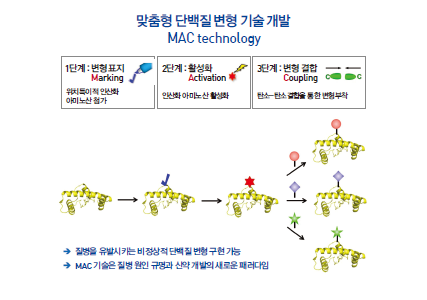

KAIST Top 10
KAIST Top 10
KAIST RESEARCH ACHIEVEMENTS
Designer proteins with chemical modifications
Department of Chemistry Hee-Sung Park
Summary
Posttranslational modification is a crucial mechanism for regulating protein function, and aberrant post-translational modifications are associated with the genesis and development of many human diseases, including cancers and neurodegenerative diseases. Therefore, our novel strategy for enabling selective and authentic chemical modifications in proteins will establish a new paradigm for understanding the molecular mechanism of human diseases and open up a new avenue for novel disease biomarker identification and posttranslational modification-based novel drug discovery.
R&D Report
We developed a new strategy for installing authentic post-translational modifications in recombinant proteins. We first create a phosphoserine-containing protein using the established O-phosphoserine orthogonal translational system. The phosphoserine residue is then dephosphorylated to dehydroalanine. Finally, the Zn-Cu-promoted conjugate addition of alkyl iodides to dehydroalanine enables chemoselective carbon-carbon bond formation.
Research Results
Using well-tailored alkyl iodide and further refinements, the current scheme can be extended to produce designer proteins with diverse forms of authentic post-translational modifications. post-translational modifications play vital roles in expanding the structural and functional diversity of proteins. Since such modifications are known to critically influence numerous biological processes, obtaining proteins with specific modifications at selected residues is essential for understanding fundamental biological mechanisms. However, despite extensive efforts by many world-leading research groups, no general methods capable of generating diverse forms of authentic protein covalent modifications had been developed. post-translational modifications play vital roles in expanding the functional diversity of proteins and have a critical influence on numerous biological processes. The availability of proteins with specific modifications at selected residues is essential for developing experimental strategies to investigate fundamental biological mechanisms. In the past, there were no methods for generating diverse native protein covalent modifications. To tackle this problem, we developed a novel three-step strategy that, in principle, can be used to generate diverse forms of authentic and selective protein modifications. First, (i) the site of the intended modification is established by co-translational phosphoserine incorporation into a recombinant protein using the phosphoserine orthogonal Escherichia coli translation system. Then, (ii) the phosphoserine residue is converted by phosphate removal to dehydroalanine, which in turn can serve as a radicalophile enabling a bio-orthogonal chemical reaction. Finally, (iii) modification moieties are directly coupled to dehydroalanine via metal-mediated conjugate additions of alkyl iodides in aqueous solution, thereby facilitating chemo-selective carbon-carbon bond formation in proteins. We demonstrated the feasibility and versatility of this scheme by producing recombinant proteins with diverse modifications, including lysine methylation in three different modification states at a specified position. This novel strategy facilitates the elucidation of possible mechanisms underlying diverse cellular functions that are dynamically mediated by post-translational modifications. The new scheme, through the effective adoption of a versatile synthetic strategy, enables the selective covalent modification of proteins through new carbon-carbon bond formation at a specific position. Therefore, we anticipate that, using well-tailored alkyl iodide and further refinements, the current scheme can be extended to produce designer proteins with diverse forms of post-translational modifications. This technology offers a powerful tool for engineering designer proteins with diverse chemical modifications, providing a novel platform for the investigation of numerous human diseases and drug development.
 Figure 1. Custom Protein Deformation Technology
 Figure 2. Utilization of custom protein modification technology
Figure 2. Utilization of custom protein modification technology
Related papers, patents, research grants, etc.
•This research was supported by the Medicinal Bioconvergence Research Center (BIOCON) of the Global Frontier Project.
• A chemical biology route to site-specific authentic protein modifications (2016), Science, 354, 623-626 (selected as “First Release”).